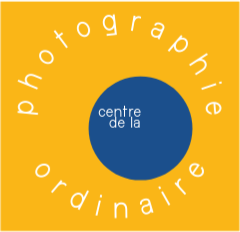
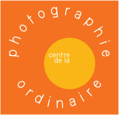
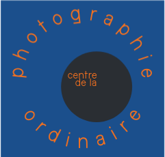
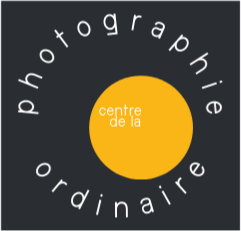
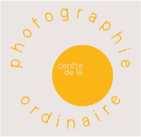

Versions officielles du logo CPO (fichiers logo_cpo/, fond transparent) et variations de couleur du titre, d'après la palette de la page 3 de la charte graphique web. Chaque élément est montré dans le même contexte : barre de header sur fond #2A2E33, menu hamburger à droite. La combinaison retenue alimentera le header des pages du site et le favicon.

jaune
#FAB617

orange
#F37120

bleu
#1B4F8C

sombre
#14171A

crème
#F5EFE4
Même dessin (carré, cercle, texte en arc) dans les cinq couleurs de la charte ; la version jaune est la seule à porter un cercle bleu, les autres un cercle jaune. Les versions crème et sombre s'utilisent sur fond opposé : crème sur fond sombre (ce site), sombre sur fond clair (papier, print).
jaune #FAB617 · couleur accent de la charte, titre mis en avant
encre #1B4F8C · faible contraste sur fond sombre, à juger
A · logo crème, titre crème recommandé sur fond sombre : sobriété, tout le poids sur le carré
B · logo jaune, titre jaune le carré jaune et le titre partagent la couleur accent
C · logo orange, titre orange accent chaud, plus nerveux que le jaune
D · logo bleu, titre encre le plus discret ; contraste du titre faible, à juger
À décider avec le centre : la version de logo et la couleur de titre retenues remplacent le header actuel des pages (brouillons + site final) et alimenteront aussi le favicon. Voir la page 3 de la charte (« logo image, à discuter ») pour les échelles sources.